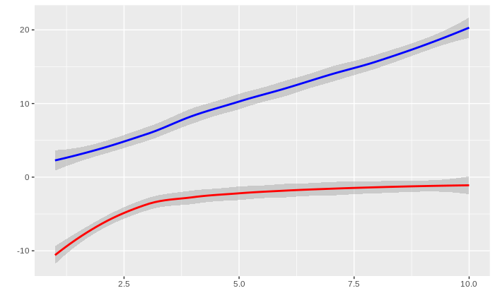

Enter Info
Datafame Name (name used in R):
Independant Varaibles:
Dependent Variables (seperate by commas for multiple response variables):
Line Colors (hex value, seperate by commas for multiple response variables):
X Axis Label(hex value, seperate by commas for multiple response variables):
Y Axis Label (hex value, seperate by commas for multiple response variables):
Type of Graph:
Smooth
Point
Line
Step
Generate Code
Example Graph

Generated Code:
Graph only shows an example of one of the lines. Colors will not show on example graph. All lines will be included in code output.
ggplot(data = test_data, aes(x = x_data, y = y_data)) + geom_jitter()